F4U Corsair 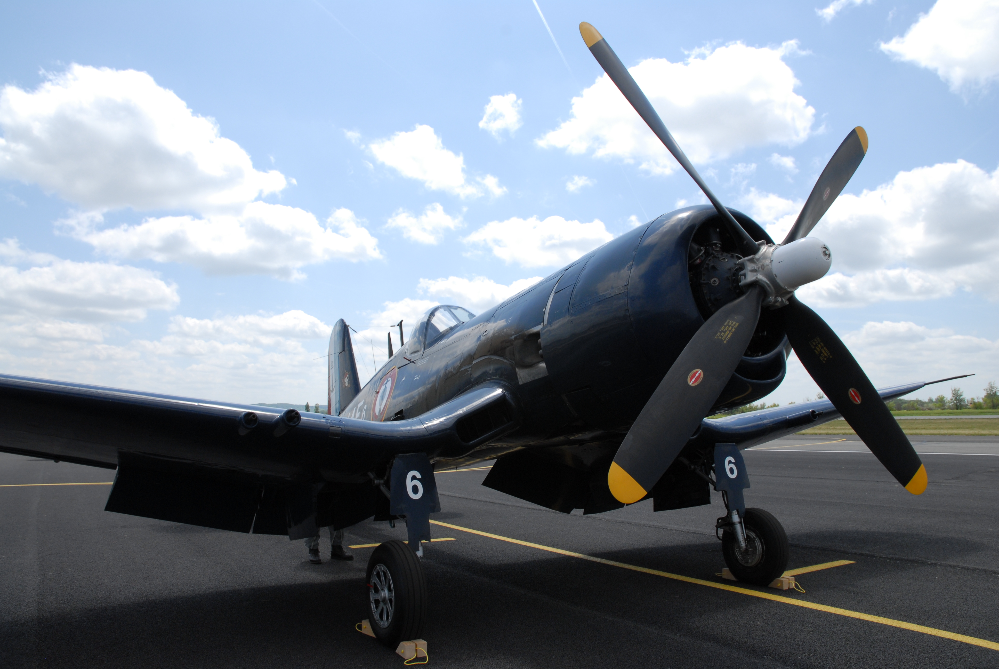 F4U Corsair jest klasyfikowany jako myśliwiec pokładowy, bombardujący. Przeznaczony do użytku lotnictwa marynakrki wojennej US Navy. Ze wzglęgu na zamontowane 4,06 metrowe śmigło samolot musiałby być wyposażony w długie, wysuwane podwozie. Aby unikąć tego problemu projektanci zdecydowali się na zastosowanie łamanych "odwróconych mewich skrzydeł" charakterystycznych dla późniejszych modeli. Wprowadzony do produkcji w 1944 roku i produkowany aż do 1953. Wyprodukowano ponad 12500 tych maszyn. Uzbrojony w 6 karabinów kalibru 12,7mm. Możliwość zamontowania 2 bomb 450kg lub 8 niekierowanych rakiet HVAR kal 127mm. Osiągał maksymalą prędkość około 700 km/h i pułap 12km. Wyposażony w 2300 konny silnik Pratt&Whitney R-2800-32W Double Wasp.
P-51D Mustang Mk. IV 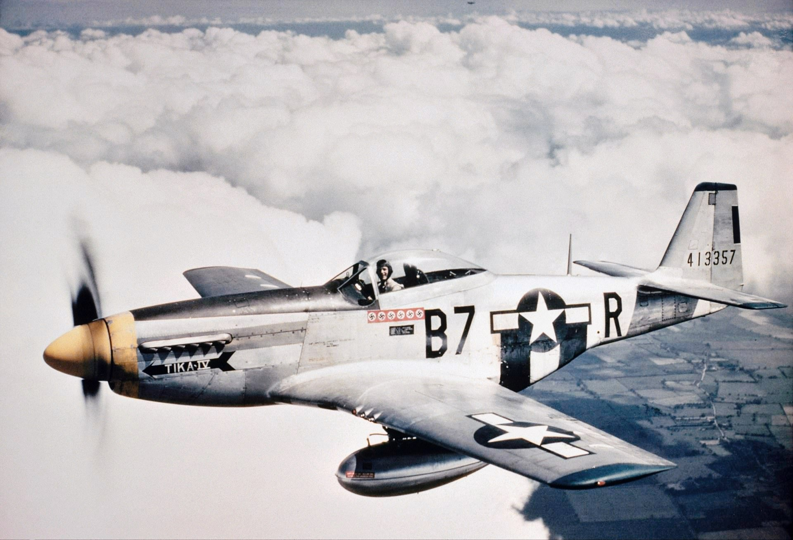 P-51 Mustang to samolot legendarny, słynny niemal tak samo jak brytyjski Supermarine Spitfire. Zaprojektowano na zlecenie Brytyjczyków. Bardzo duży zasięg umożliwiał tym samolotom lot znad Wielkiej Brytanii nad Europę i z powrotem. Spowodowało to że załogi bombowców pokochały ten samolot, bo to piloci tych maszyn zapewniali im eskortę podczas bombardowania niemieckich miast. Produkowany od 1941 do 1949 roku. Wyprodukowano ponad 3300 sztuk. Uzbrojony w 6 karabinów 12,7mm. Możliwość zamontowania 2 bomb 1000lb lub 6 niekierowanych rakiet HVAR kal 127mm i dwa odrzucane zbiorniki na paliwo. Gdy nie brano zbiorników moża było zamontować 10 rakiet HVAR lub 6 rurowych wyrzutni przeciwpancernych Bazooka. Maksymalna prędkość wynosiła 700 km/h a pułap 12,8km.
B-29 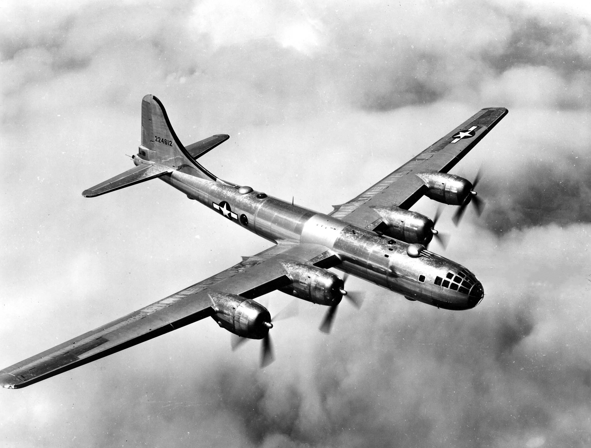 Boeing B-29 Superfortress to jeden z największych bombowców operujących podczas II wojny światowej. To właśnie ten samolot zrzucił pierwsze w historii ludzkości ładunki nuklearne pustoszące Hiroshimę i Nagasaki. Mowa tu o Little Boy i Fat Man. B-29 był ostatnim, nieodrzutowym bombowcem amerykańskiego lotnictwa. Wprowadzony do produkcji w 1943 i produkowany do 1946. Powstało około 4000 egzemplarzy. Maszyna była operowana przez 7 członków załogi: 2 pilotów 5 strzelców Uzbrojony w 5 wieżyczek: 4 zdalnie sterowane, 2 u góry i 2 na dole samolotu, każda wyposażona w 2 karabiny Browning kalibru 12,7mm. Wieżyczka ogonowa wyposażona była również w 2 karabiny Browning lecz również w działko 20mm.
Bf 109 G-6 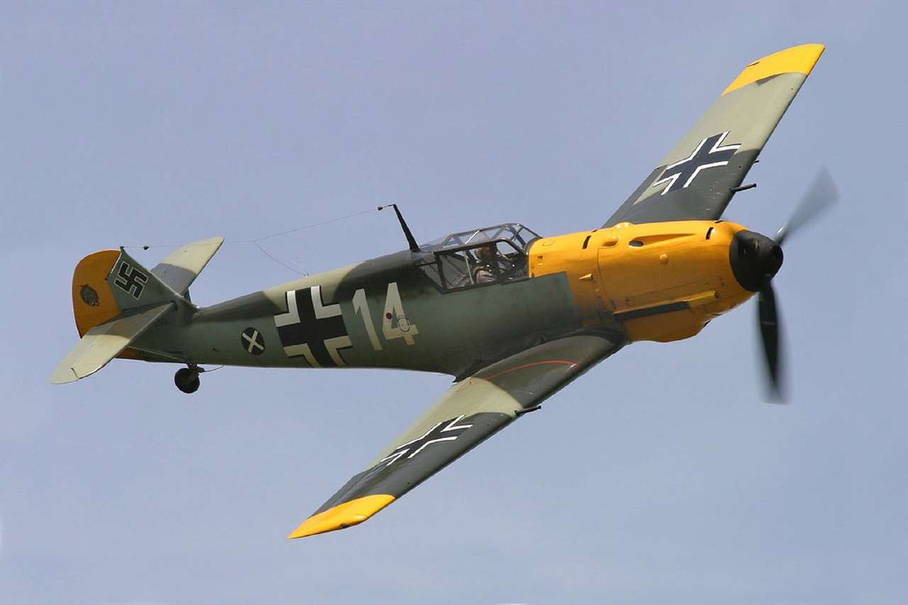 Messerschmitt Bf 109 był podstawowym samolotem myśliwskim niemieckiej Luftwaffe w czasie II wojny światowej. Obok Focke Wulfa Fw 190 najgroźniejszy przeciwnik alianckich samolotów. Miał on podobnie jak Supermarine Spitfire całkowicie metalową konstrukcję. O zabójczej skuteczności tego samolotu prowadzonego przez zdolnego pilota świadczy liczba uzyskanych zestrzeleń przez Adolfa Gallanda, niemieckiego asa lotnictwa któremu przypisuje się zestrzelenie 104 maszyn aliantów. Wersja G-6 była najliczniejszym wariantem Bf 109. Była produkowana od 1943 do 1944 roku. Powstało około 13000 sztuk tego właśnie modelu. Samolot wyposażony był w : 2 karabiny kalibru 13 mm 1 działko 20mm lub 30mm Istniała także możliwość podwieszenia: 2 dodatkowych działek kalibru 20mm 1 bomby o wadze 250kg 4 bomb o wadze 50kg każda Dodatkowego zbiornika na paliwo Rozpędzał się maksymalnie do 622 km/h i osiągał pułap 12km.
Me 262A-1a 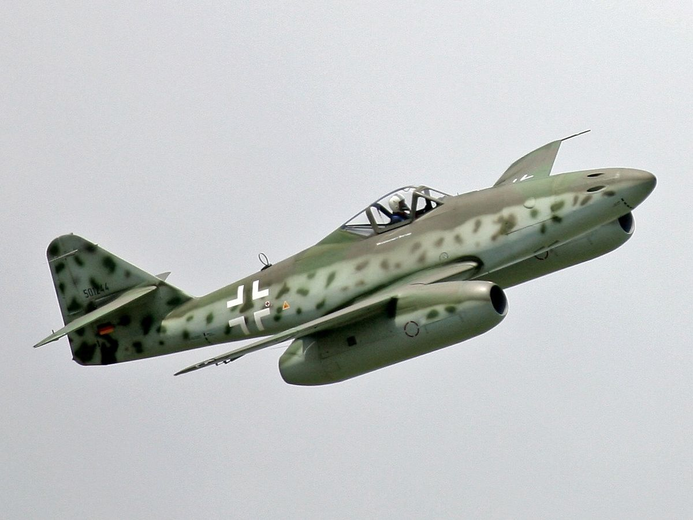 Messerschmitt Me 262A-1a "Schwalbe" był pierwszym na Świecie użytym bojowo myśliwcem odrzutowym. Początkowo samoloty znajdowały się, zgodnie z życzeniem Hitlera, tylko na wyposażeniu jednostek bombowych, chociaż maszyna ta była od początku projektowana jako myśliwiec, gdyż zadania bombowe pozostawiono już istniejącemu Arado Ar 234. Ze względu na charakterystyki pracy silników odrzutowych, wydajniejszych przy wyższych prędkościach unikano walk kołowych z wolniejszymi i zwrotniejszymi myśliwcami aliantów. Założeniem konstruktorów było użycie Me 262 jako myśliwca przechwytującego bombowce silnie chronione przez myśliwce eskorty uniemożliwiające zbliżenie się do nich konwencjonalnych myśliwców niemieckich. Produkowany od 1944 do 1945 roku. Wyprodukowano ponad 1400 egzemplarzy. Uzbrojony w 4 działka MK 108 kalibru 30 mm. Istniała też opcja podwieszenia 24 pocisków rakietowych R4M kalibru 55 mm. Osiągał maskymalną prędkość rzędu 850 km/h i pułap 11,5km.
Ju-87B2 "Stuka" 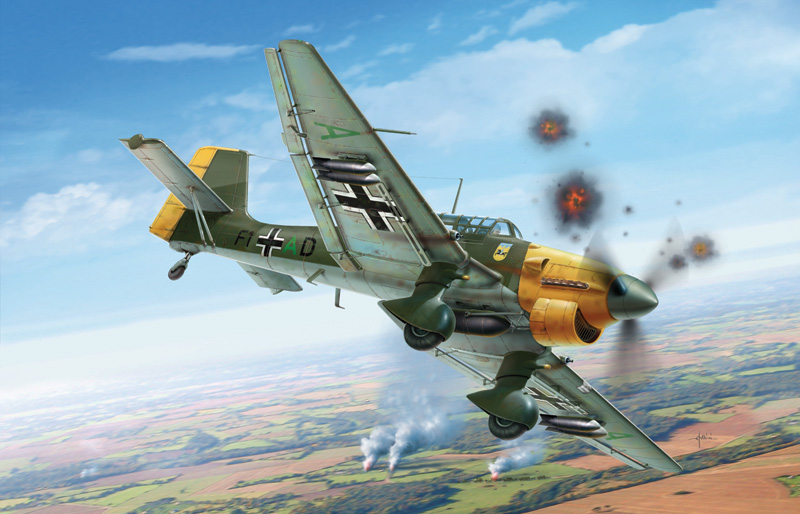 Cechą charakterystyczną Junkersa Ju 87 były skrzydła o profilu przypominającym spłaszczoną literę W, a także fakt, że w samolocie tym montowano w początkowym okresie wojny syreny akustyczne (tzw. „trąby jerychońskie”), które negatywnie wpływały na morale atakowanych. Wadą tego samolotu była niewielka zwrotność, szybkość i słabe opancerzenie, ale konstrukcja miała też kilka innowacji technologicznych, np. automatyczne wyprowadzanie samolotu z lotu nurkowego, co było użyteczne w przypadku zasłabnięcia pilota. Produkowany w latach 1939-1944. Wyprodukowano ponad 5700 sztuk Wykożystywane były jako szturmowe bombowce nurkujące Uzbrojony był w: 2 karabiny 7,62mm umieszczone na skrzydłach 1 karabin 7,62mm zamontowany a tyle samolotu i operowany przez strzelca Był w stanie unieść do 700kg bomb w kombinacjach: 1 bomba 500kg 1 bomba 250kg 4 bomby 50kg i 1 bomba 250kg Rozpędzał się tylko do 380 km/h i osiągał pułap 8km Podczas nurkowania osiągał prędkość bliską 650 km/h
A6M2 Reisen 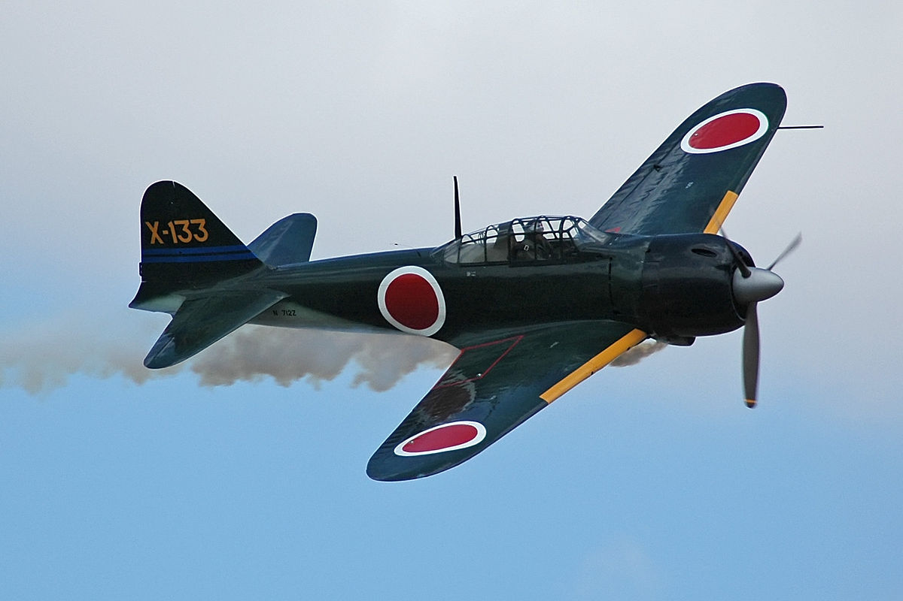 Mitsubishi A6M Reisen jest nam doskonale znany dzięki popkulturze i licznym filmom pokazującym II wojnę światową na Pacyfiku, to właśnie te samoloty zaatakowały Pearl Harbor. A6M, znacznie bardziej znany pod nazwą Zero, był podstawowym, pokładowym myśliwcem japońskiej marynarki i jednym z najlepszych w swojej klasie samolotów w początkowym okresie wojny. Trzeba również podkreślić, że był to najczęściej używany samolot przez tak zwanych "pilotów kamikaze". Samoloty tego typu były budowane od 1940 do 1944 roku. Zostało wyprodukoanych około 11000 sztuk. Samolot uzbrojony był w: 2 karabiny kalibru 7,62 mm umieszczone na dziobie 2 działka 20mm zamontowane w skrzydłach Jako wyposażenie dodatkowe montowano: 2 bomby po 30kg 1 bombę 60kg 1 bombę 250kg (przy atakach kamikaze) Osiągał 360 km/h i pułap 10,1km
Ki-43-Ic Hayabusa 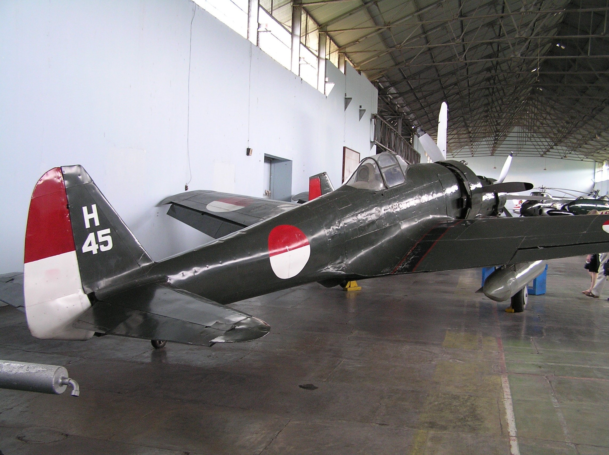 Nakajima Ki-43 Hayabusa był najliczniejszym i najważniejszym myśliwcem lotnictwa armii japońskiej podczas wojny na Pacyfiku. Ki-43 był często mylony, zwłaszcza w początkowej fazie wojny, z myśliwcem marynarki wojennej Japonii, Mitsubishi A6M. Produkowany od 1941 do 1945 roku. Zbudowano blisko 6000 egzemplarzy. Uzbrojony w 2 karabiny Ho-103 kalibru 12,7mm. Osiągał maskymalną prędkość rzędu 320 km/h i pułap 11,8km. Posiadał możliwość zawieszenia 2 zbiorników na paliwo po 200l każdy.
Supermarine Spitfire 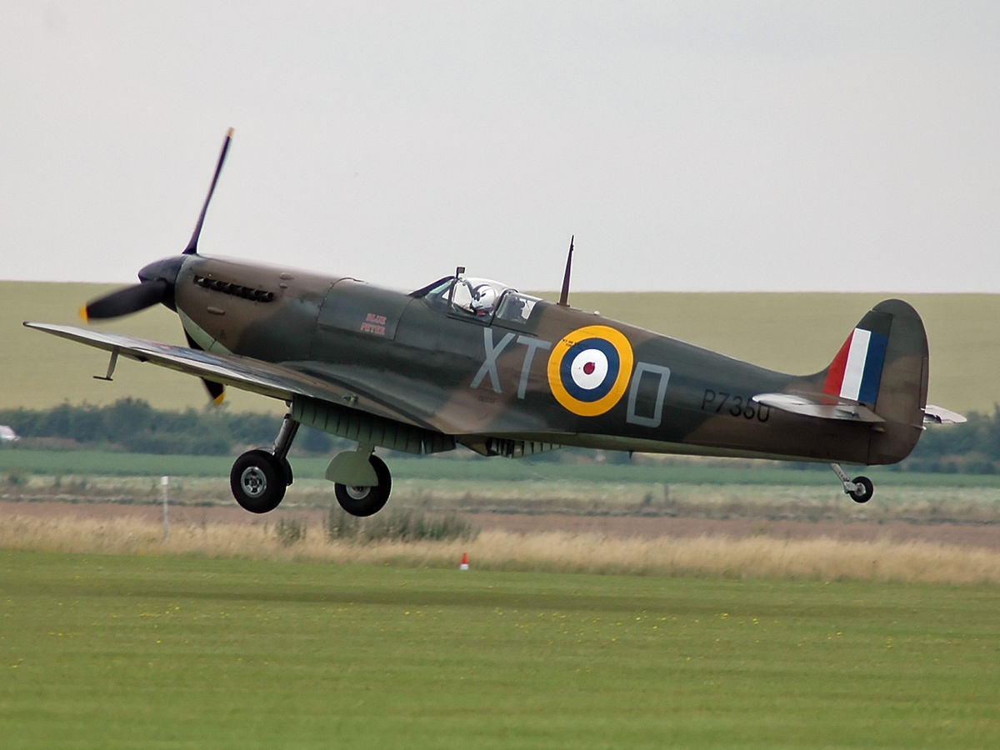 Zdecydowanie jedna z najbardziej znanych lotniczych konstrukcji z II wojny światowej. Uczestniczył w działaniach na wszystkich frontach tego konfliktu. Samolot pozornie niczym się niewyróżniający na tle podobnych maszyn z epoki, posiadał jednak doskonały potencjał rozwojowy. O ile pierwsze Spitfire'y osiągały pułap 10 km i prędkość nieco ponad 500 km/h, to wersje późniejsze były w stanie wzbić się na ponad 12 km i lecieć poziomo z prędkością przekraczającą 700 km/h. Samoloty te były produkowane w latach 1937-1948. Powsatło około 20000 sztuk różnych wersji. Samolot w wersji Mk Vb uzbrojony był w zależności od rodzaju skrzydeł: Typ A 8 × karabin Browning Mk II kalibru 7,7mm Typ B 2 × działko Hispano Mk II kalibru 20mm 4 × karabin Browning Mk II kalibru 7,7mm Typ C 4 × działko Hispano Mk II kalibru 20mm Typ C (Alt.) 2 × działko Hispano Mk II kalibru 20mm 4 × karabin Browning Mk II kalibru 7,7mm Typ E 2 × działko Hispano Mk II kalibru 20mm 2 × karabin M2 Browning kalibru 12,7mm Wersja Mk Vb osiągała 600 km/h i pułap 11,1km.
Hawker Hurricane Mk I 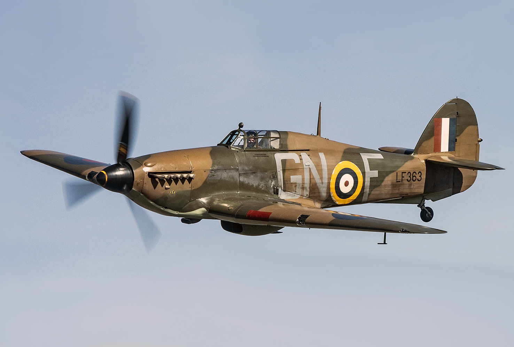 Ten myśliwski samolot odegrał dużą rolę w Bitwie o Anglię, ale działał również na wielu frontach II wojny światowej. To właśnie z tego samolotu korzystał najbardziej efektywny i skuteczny dywizjon lotniczy RAF w czasie Bitwy o Anglię. Mowa oczywiście o polskim dywizjonie 303. Ciekawostką jest fakt, że Hurricane'y są samolotami gorszymi od Supermarine Spitfire, mimo to polscy piloci wycisnęli z tych maszyn absolutnie wszystko, udowadniając ich przydatność w powietrznej walce i własny kunszt pilotażu. Produkowane były od 1937 do 1944 roku. Zbudowano blisko 14500 egzemplarzy. Model Mk I (którym latali polacy podczas bitwy o Anglię) Posiadał na uzbrojeniu 8 karabinów Browning kalibru 7,7mm Osiągał maskymalną prędkość rzędu 500 km/h i pułap 11km.
Jakowlew Jak-3 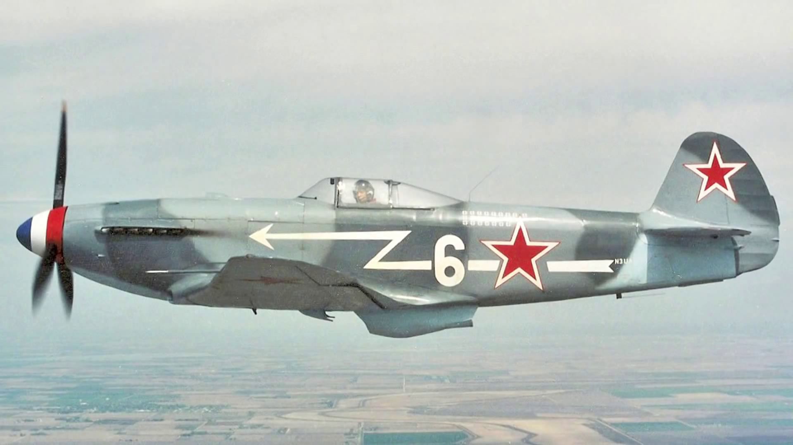 Jak-3 (ros. Як-3) był to najlepszy radziecki samolot myśliwski w początkowym okresie wojny po ataku Niemiec na ZSRR. Co prawda, Jaki ustępowały Messerschmittom Bf-109 i Focke Wulfom Fw-190 przede wszystkim siłą ognia, prędkością czy manewrowością pionową, ale dzięki lepszej manewrowości poziomej, radzieccy piloci mogli nawiązać walkę z niemieckimi maszynami. Podstawową wadą była niedostateczna moc silników Jakowlewów. Jaki-3 produkowano od 1943 do 1945 roku. Powstało niecałe 5000 maszyn. Samolot uzbrojony był w: 2 karabiny kalibru 12,7mm 1 działko kalibru 20mm Osiągał 650 km/h i pułap 10,4km
Petlakow Pe-2 "Peszka" 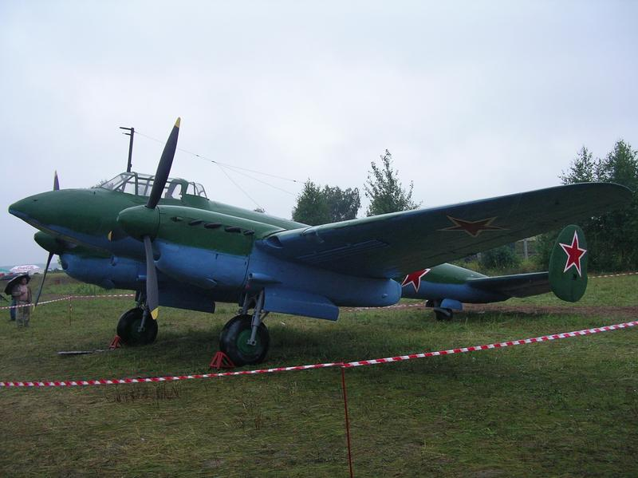 Pe-2 to kolejny radziecki samolot bojowy, przeznaczony do bombardowania nurkującego, z okresu II wojny światowej zaprojektowany przez więźniów NKWD pracujących w Centralnym Biurze Konstrukcyjnym 29. Była to nieudana, nieefektywna i pełna wad konstrukcyjnych jednostka, nieprzystająca do innych samolotów z epoki. Produkowany w latach 1941-45. Zbudowano blisko 11500 egzemplarzy. Na uzbrojeniu posiadał 4 karabiny kalibru 7,62mm 2 na wieżach 2 na dziobie Maksymalny udźwi bombowy wynosił 1000kg, jednak w praktyce nie wynosił więcej jak 500kg ładunków wybuchowych. Rozpędzał się maksymalnie do 580 km/h i osiągał pułap wynoszący 8,8km
.svg)